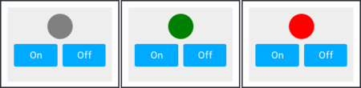
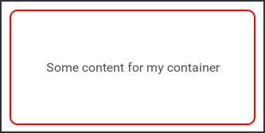

Componentization
This article covers best practices and workflow around creating components in Fuse.
Components and reusability
UX Markup is a composable declarative language where existing components can easily be combined into new, more complex components. Componentization is an important part of Fuse, and central to achieving good code structure.
How to create components
A component is defined using the ux:Class attribute. This turns the object it is on into a class definition, meaning we can reuse that piece of UX in as many places as we want. A class definition also inherits all the properties of the class it is created from (sometimes called its parent class or super class). When we create an object from a class definition, we say that we are creating an instance of that class. The following example defines a class called MyButton which inherits from Panel and contains a Text object.
------------------- parent class
/ ----- class name
v v
<Panel ux:Class="MyButton" Color="#09d" Margin="4">
<Text Value="Button text" Alignment="Center" Margin="20,10" Color="#fff"/>
</Panel>
It can then be used anywhere, like so:
<StackPanel>
<MyButton />
<MyButton />
<MyButton />
</StackPanel>
Take a look at the ux:Class documentation for more details about ux:Class.
What do we mean by inheritance
When we say that MyButton inherits from Panel, what we really mean is that MyButton will get all the same properties as Panel, as well as any new properties we define ourselves. That means that a class without any extra children or properties (custom properties are covered in the next section) added acts as exactly the same as its parent class:
<Panel ux:Class="NotSoSpecialPanel"/>
<Panel />
<NotSoSpecialPanel />
In this case, Panel and NotSoSpecialPanel behave exactly the same.
Defining properties
In many cases, like with our custom button, we want to create an interface to our component that allows us to specify various properties on a per instance basis. For our custom button for example, we want to be able to specify a different text for each instance:
<MyButton Text="Custom button text"/>
The ux:Property attribute allows us to send data to our component, give default values and even animate it:
<Panel ux:Class="MyButton" Color="#09d" ButtonText="Default text" Margin="4">
<string ux:Property="ButtonText" />
<Text Value="{ReadProperty ButtonText}" Alignment="Center" Margin="20,10" Color="#fff"/>
</Panel>
<StackPanel>
<MyButton ButtonText="First" />
<MyButton ButtonText="Second" />
<MyButton ButtonText="Last" />
</StackPanel>
Take a look at the ux:Property documentation for more details about creating properties.
Specifying dependencies
In some cases, our components cannot work alone and need a way to express that they depend on some other part of our UX defined outside of our component. This could be to animate it or trigger an event. A very common use case is needing to share a common Router instance among several pages. The way this use case is different from our use of ux:Property is that we require our component to get a Router when it is instantiated. This way, from our components perspective, it always has a Router available. For this we use the ux:Dependency attribute:
<Router ux:Dependency="router" />
If we try to instantiate our component without specifying the router dependency we will get a UX compilation error, since this component cannot function without a Router. Unlike properties, dependencies cannot have default values.
From within the class definition, dependencies can be used exactly in the same way as if they were defined with the ux:Name attribute:
<WhileTrue ux:Dependency="myTrigger" />
<WhileTrue ux:Name="myTrigger" />
Both the WhileTrue declared as a dependency and the one declared with ux:Name can be referenced directly using the name myTrigger. Therefore, we cannot use the same identifier for a ux:Dependency and a ux:Name.
The following example shows how we can use ux:Dependency to toggle the state of a WhileTrue defined outside the class definition.
<Panel ux:Class="DependentPanel" Color="Blue">
<WhileTrue ux:Dependency="aTrigger" />
<Clicked>
<Toggle Target="aTrigger" />
</Clicked>
</Panel>
<WhileTrue ux:Name="showSomething">
<Text Value="The panel was clicked" Color="White" Alignment="Center" />
</WhileTrue>
<DependentPanel aTrigger="showSomething" />
Take a look at the ux:Dependency documentation for more details.
Inheriting dependencies
Dependencies are not forwarded when you subclass. Therefore, you have to manually forward them to the baseclass you are sublcassing:
<Page ux:Class="A">
<Router ux:Dependency="router" />
</Page>
<A ux:Class="B">
<Router ux:Dependency="router" ux:Binding="router" />
</A>
You can find more details about the ux:Binding attribute here.
Inner logic using JavaScript
Components can contain custom business logic using the JavaScript tag. Here we can define local state as well as functions that act upon dependencies or other components. The following component takes a Router as a dependency, and uses it through JavaScript.
<Panel ux:Class="MyClass">
<Router ux:Dependency="router" />
<JavaScript>
function goBack() {
router.goBack();
}
module.exports = {
doSomething: doSomething
};
</JavaScript>
<Button Text="Go Back" Clicked="{goBack}" />
</Panel>
Custom Events (UserEvent)
There are many cases where we want our component to pass messages to the outside world.
We can use UserEvent for exactly this, which allows us to raise and handle events in both UX and JavaScript.
We put a UserEvent at the root of our component class to indicate that it can raise a particular event.
Where we place our UserEvent is important, since only the node it is attached to and its children can raise or handle it.
<Panel ux:Class="MyComponent">
<UserEvent ux:Name="myEvent" />
</Panel>
This creates an event named myEvent.
We can now use RaiseUserEvent to raise the event from UX.
<Clicked>
<RaiseUserEvent EventName="myEvent" />
</Clicked>
When we instantiate our component, we can respond to its events using the OnUserEvent trigger.
<MyComponent>
<OnUserEvent EventName="myEvent">
... animations & actions ...
</OnUserEvent>
</MyComponent>
We recommend subclassing OnUserEvent instead of using it directly and setting its EventName each time:
<Panel ux:Class="MyComponent">
<UserEvent ux:Name="myEvent" />
<OnUserEvent ux:Class="OnMyEvent" EventName="myEvent"/>
</Panel>
<MyComponent>
<OnMyEvent>
... animations & actions ...
</OnMyEvent>
</MyComponent>
Note that OnMyEvent will only be usable inside MyComponent.
Check out the full documentation on the user event API for more details.
When to create components
Since turning a piece of UX markup into a reusable component is often as simple as just adding the ux:Class attribute, we tend to componentize often. The challenge is not so much to understand when there is an opportunity for componentization, but to understand which components to make. When splitting up a complex piece of UX into reusable parts, we need to decide which parts should depend on each other, and at what abstraction level we want them to be defined. We will take a closer look at that question in the following sections.
ux:Class workflow
Since componentization in Fuse is so quick, a common workflow when writing UX is to first write everything "in-line" without caring about components at all. We only componentize after we have found a structure we want to move forward with. The reason for why this approach is so valuable is that it avoids the potential pitfalls of prematurely abstracting code. This way, we can let all the reusable components naturally appear before we decide to abstract and assign class names.
Recognizing component boundaries
Making Fuse components is sometimes the art of determining effective component boundaries. The following example illustrates a case where there are several ways we might componentize:
<StackPanel Margin="10" Padding="10" Color="#eee" ItemSpacing="8">
<Circle ux:Name="status" Width="40" Height="40" Color="Gray" />
<Grid ColumnCount="2" CellSpacing="8">
<Panel>
<Text Value="On" Alignment="Center" Margin="8" Color="White"/>
<Clicked>
<Set status.Color="Green" />
</Clicked>
<Rectangle CornerRadius="3" Color="#0af" />
</Panel>
<Panel>
<Text Value="Off" Alignment="Center" Margin="8" Color="White"/>
<Clicked>
<Set status.Color="Red" />
</Clicked>
<Rectangle CornerRadius="3" Color="#0af" />
</Panel>
</Grid>
</StackPanel>

This is a Panel with a colored Circle, and two custom buttons that change its color. We already have several options for how to split this up:
Everything as one component:
<StackPanel ux:Class="StatusPanel" ...>
...
</StackPanel>
Or we can componentize the two buttons:
<StackPanel Margin="10" Padding="10" Color="#eee" ItemSpacing="8">
<Circle ux:Name="status" Width="40" Height="40" Color="Gray" />
<OnOffButtons />
</StackPanel>
<Grid ux:Class="OnOffButtons" ColumnCount="2" CellSpacing="8">
<Circle ux:Dependency="status" />
<Panel>
<Text Value="On" Alignment="Center" Margin="8" Color="White"/>
<Clicked>
<Set status.Color="Green" />
</Clicked>
<Rectangle CornerRadius="3" Color="#0af" />
</Panel>
<Panel>
<Text Value="Off" Alignment="Center" Margin="8" Color="White"/>
<Clicked>
<Set status.Color="Red" />
</Clicked>
<Rectangle CornerRadius="3" Color="#0af" />
</Panel>
</Grid>
At this point we can see that there is a dependency between the inner workings of the OnOffButtons class and the "status" circle. We might be tempted to call this a dependency from OnOffButtons to a Circle, and declare that using ux:Dependency as we have done in the example above.
This is however a good time to consider whether we have discovered an actual component dependency, or whether this is just a shared view state.
In most cases, it is preferable to have components be as independent as possible. In the example above, we would like to split our components up in a way such that the OnOffButtons component can be used in other situations as well; not only to toggle the color of a Circle.
Let's let these two components share state using JavaScript instead:
<Grid ux:Class="OnOffButtons" ColumnCount="2">
<Panel Clicked="{turnOn}">
<Text Value="On" Alignment="Center" Margin="8" Color="White"/>
<Rectangle CornerRadius="3" Color="#0af" />
</Panel>
<Panel Clicked="{turnOff}">
<Text Value="Off" Alignment="Center" Margin="8" Color="White"/>
<Rectangle CornerRadius="3" Color="#0af" />
</Panel>
</Grid>
<JavaScript>
var Observable = require("FuseJS/Observable");
var isOn = Observable(false);
function turnOn() { isOn.value = true; }
function turnOff() { isOn.value = false; }
module.exports = {
isOn: isOn,
turnOn: turnOn,
turnOff: turnOff
};
</JavaScript>
<StackPanel Margin="10" Padding="10" Color="#eee" ItemSpacing="8">
<Circle ux:Name="status" Width="40" Height="40" Color="Gray" />
<WhileTrue Value="{isOn}">
<Change status.Color="Green" />
</WhileTrue>
<WhileFalse Value="{isOn}">
<Change status.Color="Red" />
</WhileFalse>
</StatusCircle>
<OnOffButtons />
</StackPanel>
This time, our two components are independent of each other. They are, however, not independent of the view model (the JavaScript tag). Notice that the OnOffButtons component now has data-bindings that reach outside the component itself. While this works fine, and can be very useful, it can reduce code clarity and creates an unnecessary dependency on the view-model.
Let's instead add a ux:Property to the component which we can then data-bind at the point of instantiation:
<Grid ux:Class="OnOffButtons" ColumnCount="2">
<bool ux:Property="Value" />
<Panel HitTestMode="LocalBounds">
<Text Value="On" />
<Clicked>
<Set this.Value="true" />
</Clicked>
</Panel>
<Panel>
<Text Value="Off" />
<Clicked>
<Set this.Value="false" />
</Clicked>
</Panel>
</Grid>
<JavaScript>
var Observable = require("FuseJS/Observable");
var status = Observable(false);
module.exports = {
status: status
};
</JavaScript>
<StackPanel Margin="10" Padding="10" Color="#eee" ItemSpacing="8">>
<Circle ux:Name="status" Width="40" Height="40" Color="Gray" />
<WhileTrue Value="{status}">
<Change status.Color="Green" />
</WhileTrue>
<WhileFalse Value="{status}">
<Change status.Color="Red" />
</WhileFalse>
</Circle>
<OnOffButtons Value="{status}"/>
</StackPanel>
The "status" circle is at this point a good candidate for componentization as well, just to increase the readability and maintainability of our UX:
<Grid ux:Class="OnOffButtons" ColumnCount="2">
<bool ux:Property="Value" />
<Panel HitTestMode="LocalBounds">
<Text Value="On" />
<Clicked>
<Set this.Value="true" />
</Clicked>
</Panel>
<Panel>
<Text Value="Off" />
<Clicked>
<Set this.Value="false" />
</Clicked>
</Panel>
</Grid>
<Circle ux:Class="StatusCircle" Width="40" Height="40" Color="Gray" />
<bool ux:Property="Status" />
<WhileTrue Value="{ReadProperty Status}">
<Change status.Color="Green" />
</WhileTrue>
<WhileFalse Value="{ReadProperty Status}">
<Change status.Color="Red" />
</WhileFalse>
</Circle>
<JavaScript>
var Observable = require("FuseJS/Observable");
var status = Observable(false);
module.exports = {
status: status
};
</JavaScript>
<StackPanel Margin="10" Padding="10" Color="#eee" ItemSpacing="8">>
<StatusCircle Status="{status}" />
<OnOffButtons Value="{status}" />
</StackPanel>
Now we have two independent components, with clearly defined interfaces.
Referencing files through properties
There are cases where we would like to pass references to files to our components. Examples include embedding images or videos. We can do this by creating properties of the type FileSource and then property-bind the File property of the Image or Video object to it. Then we can reference local files by their path when we instantiate our class:
<App>
<Panel ux:Class="TestComponent">
<FileSource ux:Property="ImageFile" />
<FileSource ux:Property="VideoFile" />
<Grid Rows="1*,1*">
<Image File="{ReadProperty ImageFile}" Margin="10"/>
<Video File="{ReadProperty VideoFile}" AutoPlay="true" IsLooping="true"/>
</Grid>
</Panel>
<TestComponent ImageFile="test.png" VideoFile="testvideo.mp4"/>
</App>
Container
The Container class can be used as a base class when creating components that should position its children deeper into its own subtree. Here is a quick example:
<Container ux:Class="MyContainer" Subtree="innerPanel">
<Rectangle ux:Binding="Children" CornerRadius="10" Margin="10">
<Stroke Color="Red" Width="2" />
<Panel Margin="10" ux:Name="innerPanel" />
</Rectangle>
</Container>
<MyContainer>
<Text Value="Some content for my container"
Alignment="Center"/>
</MyContainer>

Check out the reference documentation for container for a more details.
Templates (ux:Template)
Templates can be used to increase the customizability of a component by allowing it to take custom objects to be used as its appearance. An example of this in action is the PageIndicator, which spawns an object from a template for each page in a PageControl. An element is made into a template by setting the ux:Template attribute to a name you want to identify that template by. This name is used by elements which accepts templates as children. Check out the ux:Template docs for more details.
Templates can be instantiated using an Each. Each has a property called TemplateSource, which specifies the node in which Each looks for templates. As mentioned before, templates identify themselves by a name. The TemplateKey property specifies which template Each should use, if it is available.
Here we set TemplateSource="this" because Each should look for the key in its parent class (CoolRepeater):
<StackPanel ux:Class="CoolRepeater" Background="#FAD">
<Each TemplateSource="this" TemplateKey="Item" Count="20">
<Text>Default template</Text>
</Each>
</StackPanel>
This is a custom component which accepts a template, which it repeats 20 times. If no template is given, the Each will fallback to its default template: whatever is inside the Each. The custom component can then be used like this:
<CoolRepeater>
<Text ux:Template="Item">Hello, world!</Text>
</CoolRepeater>